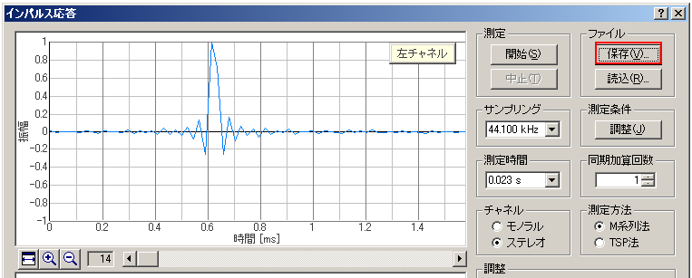
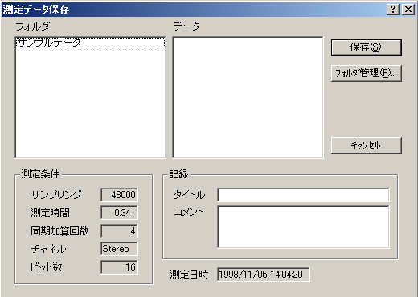
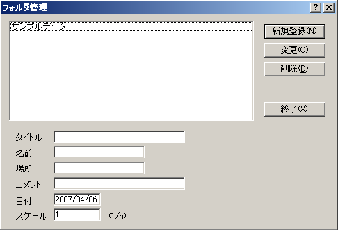

| 項目 | 説明 | |
|---|---|---|
| フォルダ | 測定データの保存先のフォルダが一覧表示されます。 | |
| データ | 選択したフォルダに保存されている測定データが一覧表示されます。 | |
| 測定条件 | 測定したデータの測定条件が表示されます。 | |
| 記録 | タイトル | 測定データに付けるタイトルを入力します。ここで入力したタイトルは、[データ]の一覧に表示されます。 |
| コメント | 任意につける情報です。不要であれば入力しなくても構いません。 | |
| 測定日時 | データを測定した日時が表示されます。 | |
| 保存 | 保存を実行します。 | |
| フォルダ管理 | データを保存するフォルダに関して、新規作成，フォルダ名等のフォルダ情報変更，削除を行います。 →後頁で説明 | |

| 項目 | 説明 |
|---|---|
| フォルダ一覧 | 登録済みのフォルダが一覧表示されます。 |
| タイトル | フォルダに付けるタイトル（フォルダ名）を入力します。 |
| 名前 | 測定者名を入力します。入力は任意です。 |
| 場所 | 測定場所を入力します。入力は任意です。 |
| コメント | フォルダに付けるコメントを入力します。入力は任意です。 |
| 日付 | フォルダの作成日付を入力します。現在の日付がデフォルトで入っています。 |
| スケール | 模型での測定の場合にそのスケールを入力します。音響分析システム(SA)では、スケールに基づいて実際の大きさに換算して計算を行います。 |
| 登録 | 入力した内容でフォルダを新規作成します。 |
| 変更 | フォルダ一覧で選択したフォルダの情報を変更します。フォルダ一覧の中から変更したいフォルダを選択して、タイトルなどの情報を変更し、[変更]ボタンをクリックしてください。 |
| 削除 | フォルダ一覧で選択したフォルダを削除します。 |
| 1． | 保存先フォルダを選択する： [フォルダ]リストボックスに並んでいるフォルダの一覧から、測定したデータを保存するフォルダを選択します。なお、保存先フォルダを新規に作成したい場合は、[フォルダ管理]ボタンで行います。 |
| 2． | データ名を入力する：[記録]の[タイトル]入力ボックスに、測定したデータのデータ名を入力します。また、必要に応じて[コメント]を入力します。 |
| 3． | 保存する：[保存]ボタンで保存を実行します。取りやめたいときは[キャンセル]ボタンをクリックします。 |